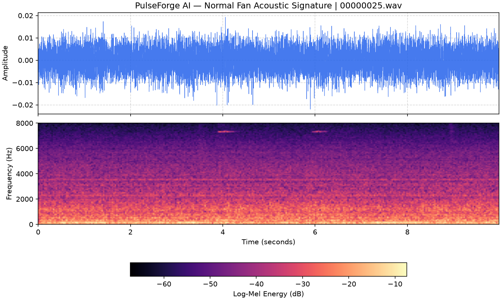
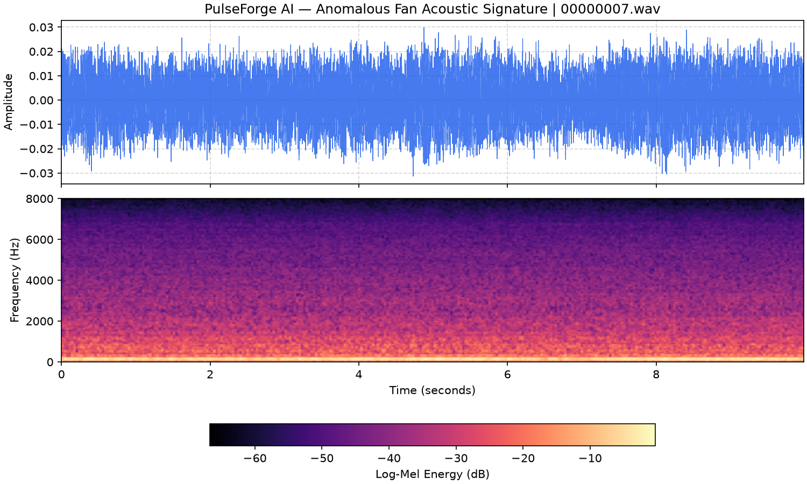

PulseForge AI listens to industrial rotating machinery to detect microscopic bearing degradation, blade fouling, and mechanical friction weeks before vibration thresholds breach—generating ISO 10816-grounded work orders with zero hallucinations.
Unlike low-frequency broadband vibration (10–1,000 Hz) which only rises when mechanical surfaces are already damaged, acoustic emissions capture early harmonic stress and transient metal-to-metal contact in the 2 kHz – 8 kHz bands.
Real empirical 128-band log-mel spectrograms extracted from Hitachi MIMII industrial fan recordings.


PulseForge AI merges physical edge anomaly detection with generative autonomous maintenance reasoning into a unified plant solution.
Traditional models fail in noisy plants. PulseForge uses an unsupervised PyTorch Autoencoder trained on healthy sound profiles, combined with physical signal gating and latent space familiarity.
Raw anomaly scores confuse operators. Our Factory Brain copilot, powered by Groq LPU running Llama 3.3 (70B), bridges the gap between acoustic telemetry and immediate floor action.
Every audio recording passes through a rigorous six-stage verification and decision pipeline.
Explore the comprehensive features operational in PulseForge AI today.
Guided 3-stage workflow allowing technicians to upload plant recordings or test pre-calibrated baseline and fault scenarios with instant audio playback.
Powered by Groq LPU running Llama 3.3 (70B), our autonomous agent translates acoustic telemetry into OSHA LOTO work orders and technician guidance.
Real-time condition monitoring across multi-line factory environments, aggregating equipment health indexes and active vibration alert states.
Empirical validation curves on Hitachi MIMII industrial fan recordings achieving 0.9375 AUROC, with loss curves and threshold calibration displays.
Local SQLite metadata audit store capturing timestamped inspection logs, anomaly scores, and processing latency with CSV export compliance.
Exposes PulseForge diagnostic and work order tools over standardized MCP, enabling external AI assistants (Claude, Antigravity) to query machines.